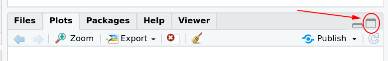

x <- rexp(100, rate = 1)Lab 4: Sampling distributions
This tutorial is adapted from OpenIntro and is released under a Creative Commons Attribution-ShareAlike 3.0 Unported license. This lab was written for OpenIntro by Andrew Bray and Mine etinkaya-Rundel, extended for the University of York by Gustav Delius, and subsequently extended by Stephen Connor.
This practical is about i.i.d. samples from random variables and drives home the fact that the sample mean and the sample variance are themselves random variables with a distribution. You will investigate this distribution and how it is affected by the sample size.
Remember!
As always, you should start the lab by creating a script file (with a sensible name), and then adding each line of code to this file as you go, so that you can easily re-run it later if necessary. Add your own comments to remind you what each chunk of code does!
Independent and identically distributed (i.i.d.) samples
An i.i.d. sample of size \(n\) is a collection of \(n\) independent random variables \(X_1,X_2,\dots,X_n\), each with the same distribution. (We use the notation \(X\) to refer to a generic random variable having the same distribution as any of the \(X_i\).) If we perform the probability experiment and measure all these random variables, we will get a collection of \(n\) numbers \(x_1,x_2,\dots,x_n\). The topic of this worksheet is how to learn something about the distribution of the random variable \(X\) from the distribution of the values of this sample. This follows on from our investigations into simulation during Lab 1.
We saw in that lab that we can ask R to simulate an i.i.d. sample using the function sample(). There we did it for pulling coloured balls out of bags, or sampling faulty light bulbs. But it should come as no surprise that R can simulate random numbers from a wide range of discrete and continuous distributions. Let us here consider i.i.d. samples from the exponential distribution. Recall that if \(X\sim\mbox{\textup{Exp}}(\lambda)\) then its density function is \[ f_X(x) = \lambda e^{-\lambda x}\,, \quad x\ge 0 \,. \]
The following command simulates a measurement of a sample of size \(n=100\) from the exponential distribution with parameter \(\lambda =1\).
Let us look at the distribution of the values in this sample by making a histogram.
hist(x)You should now see a histogram displayed in the Plots panel at the lower right of the RStudio window. R automatically chooses the width of the bins in the histogram, based on the range of the data, using something called Sturge’s rule by default. We can suggest to R to use more bins if we want to get a more detailed view. We can also specify the probability = TRUE option so that the vertical axis shows the proportion of values in each bin instead of the number.
hist(x, breaks = 20, probability = TRUE)Let us compare this to the density of the exponential distribution by plotting that on top of the histogram.
Now let us assume we did not already know that this sample was from an exponential distribution with parameter 1. Let us instead assume that we were just given these 100 numbers, and believe that they come from an \(\mbox{\textup{Exp}}(\lambda)\) distribution: we want to use these numbers to estimate \(\lambda\).
Estimating the expectation
In this lab we will in particular look at estimating the expectation of the underlying distribution. We of course know that an exponentially distributed random variable \(X\) with parameter \(\lambda\) has an expectation \(\mathbb{E}\left[X\right]=1/\lambda\). So if we can estimate \(\mathbb{E}\left[X\right]\) we can also estimate the parameter \(\lambda\).
We have seen that the sample mean \[\bar{X}_{n}=(X_1+\cdots +X_{n})/n\] is going to be a good estimator of the expectation of \(X\). The law of large numbers says that this estimator gets better and better as \(n\to\infty\). But for finite sample size \(n\) there will be some uncertainty in the estimate of \(\mathbb{E}\left[X\right]\).
Let us calculate the value \(\bar{x}_{100}\) that the sample mean \(\bar{X}_{100}\) takes in the realisation of the sample that we simulated above. When I ran mean(x) on my computer I obtained \(\bar{x}_{100}=\) 0.9384825. However, you will get a different estimate for \(\mathbb{E}\left[X\right]\) because the random number generator will have given you a different set of numbers \(x_1,\dots, x_{100}\). As you know, you will get different random numbers each time you ask R for random numbers, except if you set the seed of the random number generator to a specific value right before you ask R for the random numbers. So if we run the code
we will all get the same set of values \(x_1,\dots,x_{100}\), and thus the same estimate \(\mathbb{E}\left[X\right]\approx\) 1.0306764.
Sampling distribution of the sample mean
It is not surprising that every time we take another realisation of the i.i.d. sample, we get a different value for the sample mean. After all, the sample mean \(\bar{X}_n\) is a random variable. It is useful to get a sense of just how much variability we should expect when estimating the expectation value this way. The distribution of sample means \(\bar{X}_n\), called the sampling distribution of the sample mean, can help us understand this variability.
We will visualise the sampling distribution of the sample mean by plotting the histogram from a large number of realisations of \(\bar{X}_n\). Such a histogram gives an approximation to the probability density function of the random variable \(\bar{X}_n\).
Here we use R to create 50,000 realisations of the samples of size \(n=50\), calculate the value of the sample mean \(\bar{x}_{50}\) for each realisation, and store all the results in a vector called sample_means50. In the next subsection we’ll review how these lines of code work. For now let’s plot a histogram of the values:
hist(sample_means50, breaks = 40, probability = TRUE)Interlude: the for loop
Let’s take a break from the statistics for a moment to let that earlier block of code sink in. You have just run your first for loop, a cornerstone of computer programming. The idea behind the for loop is iteration: it allows you to execute code as many times as you want without having to type out every iteration. In the case above, we wanted to iterate the two lines of code inside the curly braces that simulates an i.i.d. sample of size 50 then save the mean of that realisation into the sample_means50 vector. Without the for loop, this would be painful:
and so on, 50,000 times.
With the for loop, these thousands of lines of code are compressed into a handful of lines.
To follow a bit more closely what is going on, I have added one extra line to the code below, which prints the variable i during each iteration of the loop. Run this code.
Let’s consider this code line by line to figure out what it does. In the first line we initialized a vector. In this case, we created a vector of 50,000 zeros called sample_means50. This vector will store values generated within the for loop. In the second line we set the seed for the random number generator.
The third line calls the for loop itself. The syntax can be loosely read as, “for every element i from 1 to 50,000, run the following lines of code”. You can think of i as the counter that keeps track of which step of the iteration you are on. Therefore, more precisely, the loop will run once when i=1, then once when i=2, and so on up to i=50000.
The body of the for loop is the part inside the curly braces, and this set of code is run for each value of i. Here, on every loop, we take an i.i.d. sample x of size 50 from the exponential distribution, take its mean, and store it as the ith element of sample_means50.
In order to display that this is really happening, we asked R to print i at each iteration. This line of code is optional and is only used for displaying what’s going on while the for loop is running.
The for loop allows us not only to run the code 50,000 times, but to neatly package the results, element by element, into the vector that we initialized at the outset.
Sample size and the sampling distribution
Mechanics aside, let’s return to the purpose for running the loop: to compute a sampling distribution, specifically, this one:
hist(sample_means50, breaks = 25, probability = TRUE) The sampling distribution that we computed tells us much about estimating \(\mathbb{E}\left[X\right]\). By looking at the histogram we see that most of the time we are going to get an estimate close to the true value of 1 but that there is some non-negligible probability of getting an estimate that is off by as much as 0.2.
Indeed we can estimate the probability that the estimate is off by as much as 0.2 from the sampling distribution by calculating the proportion of the 50,000 values in sample_means50 that are more than 0.2 away from 1.
We can also determine the empirical distribution function \(F_{50}\) for \(\bar{X}_{50}\). This is a step function that jumps by \(1/n\) at every value that is represented in the sample (or by multiples of \(1/n\) if a value occurs multiple times), where \(n\) is the sample size. The function ecdf() returns the empirical distribution function:
F50 <- ecdf(sample_means50)Let’s plot this distribution function
plot(F50)
Note
The name ecdf stands for “empirical cumulative distribution function”. That it is called cumulative contains no extra information, it just so happens that some people refer to the distribution function as the “cumulative” distribution function to highlight the fact that a distribution function at \(x\) accumulates all the contributions from values up to \(x\).
We can now for example look at the probability that, when using a sample of size 50, we are going to get an estimate for \(\mathbb{E}\left[X\right]\) that is more than 0.2 away from the true value of \(\mathbb{E}\left[X\right]=1\).
\[ \begin{split} \mathbb{P}\left(|\bar{X}_{50}-\mathbb{E}\left[X\right]|>0.2\right) &= \mathbb{P}\left(\bar{X}_{50}<0.8\right)+\mathbb{P}\left(\bar{X}_{50}>1.2\right) \\ &= \mathbb{P}\left(\bar{X}_{50}<0.8\right)+1-\mathbb{P}\left(\bar{X}_{50}\leq 1.2\right) \\ &=F_{\bar{X}_{50}}(0.8)+1-F_{\bar{X}_{50}}(1.2). \end{split} \]
We can estimate that from the empirical distribution function as follows:
F50(0.8) + 1 - F50(1.2)Thus, if we want to estimate \(\mathbb{E}\left[X\right]\) with a precision of better than \(\pm 0.2\) we should use a larger sample, because the chance of getting an answer outside the desired precision is about 16%.
To get a sense of the effect that the sample size has on the sampling distribution, let’s build up two more sampling distributions: one based on a sample size of 100 and another based on a sample size of 200.
Here we are able to use a single for loop to build two distributions by adding additional lines inside the curly braces. Don’t worry about the fact that x is used for the name of two different objects: in the second command of the for loop, the mean of x is saved to the relevant place in the vector sample_means100; with the mean saved, we’re now free to overwrite the object x with a new sample, this time of size 200. In general, any time you create an object using a name that is already in use, the old object will get replaced with the new one.
To see the effect that different sample sizes have on the sampling distribution, plot the three distributions above each other. First increase the size of the Plots pane in RStudio by clicking the icon at the top-right of the pane.

Then use the commands
The first command specifies that you’d like to divide the plotting area into 3 rows and 1 column of plots. The breaks argument specifies the number of bins used in constructing the histogram. The xlim argument specifies the range of the x-axis of the histogram, and by setting it equal to xlimits for each histogram, we ensure that all three histograms will be plotted with the same limits on the x-axis.
To return to the default setting of plotting one plot at a time, run the following command:
Looking at the histogram for the sample mean of size 200, one gets the impression that it looks very much like a normal distribution. Why would the sample mean for the exponential distribution have a normal distribution? This is the Central Limit Theorem in action!
Estimating the variance
As we will see in lectures, we can also estimate the variance \(\textup{Var}\left(X\right)\) of a random variable from the sample variance. The sample variance is calculated with the R function var():
Notice that the sampling distribution for the sample variance does not look at all like a normal distribution. The central limit theorem can be used to show that for sufficiently large sample sizes the sampling distribution will again look normal; however a sample size of 50 is clearly not enough for that.
Real-estate data
Now let’s look at some real data. This week we’ll consider real-estate data from the city of Ames, Iowa. The details of every real estate transaction in Ames is recorded by the City Assessor’s office.
Our particular focus for this lab will be all residential home sales in Ames between 2006 and 2010. Let’s load the data.
download.file("http://www.openintro.org/stat/data/ames.RData",
destfile = "ames.RData")
load("ames.RData")As you can see in the Environment panel in RStudio, there is now a variable ames with 2930 observations of 82 variables. Let’s take a look at the names of the variables in this dataset.
names(ames)We will focus our attention on two of the variables: the above ground living area of the house in square feet (Gr.Liv.Area) and the sale price (SalePrice). To save some effort throughout the lab, create two variables with short names that represent these two variables.
area <- ames$Gr.Liv.Area
price <- ames$SalePriceWe refer to the collection of all the house sales in Ames as the “population”. The term “population” is used by statisticians not only to refer to populations of people but to any complete collection of observations.
In this lab we have access to the entire population, but this is rarely the case in real life. Gathering information on an entire population is often extremely costly or impossible. Because of this, we often take a sample of the population and use that to understand the properties of the population.
Taking a sample
If we were interested in estimating the mean living area of houses sold in Ames, but did not have access to the data from all house sales, we could randomly select a smaller number of sales to survey and collect the data only for those. Then we could use that sample as the basis of our estimation. Let us assume we only have enough resources to observe 50 randomly selected house sales. We can simulate taking such a random sample with the command
samp1 <- sample(area, 50)This command randomly chooses 50 entries from the vector area, and this is then assigned to the variable samp1. (You will remember the sample() function from Lab 1, where we used it to generate random numbers by making it sample from the entries of the vector 1:6. The difference here is that we are using the sample() function without the replace=TRUE option, so that we do not get the same element more than once.)
Theoretically we model such a sample with a sequence of i.i.d. random variables \(X_1,\dots, X_{50}\). This is now a sample from the distribution of the area among all houses.
Note
Because we are sampling without replacement from a finite population, the \(X_i\) are not strictly independent. But we often assume that the population is so large compared to the sample size that the dependence is negligible.
The vector samp1 contains a particular realisation of those random variables \(X_1,\dots, X_{50}\). The estimator that we use to estimate the average living area in homes in Ames is the sample mean, i.e., the random variable \[\bar{X}_{50}=(X_1+\cdots + X_{50})/50.\] For our realisation of the sample it takes the value
mean(samp1)Depending on which 50 homes you randomly selected, your estimate could be a bit above or a bit below the true population mean of 1499.69 square feet. In general, though, the sample mean turns out to be a pretty good estimate of the average living area, and we were able to get it by sampling less than 3% of the population.
Sampling distribution
Not surprisingly, every time we take another random sample, we get a different value for the sample mean. It is useful to get a sense of just how much variability we should expect when estimating the expected value this way, just as when we were working with simulated data from an exponential distribution earlier in this lab. So we again want to understand the sampling distribution of the sample mean \(\bar{X}_{50}\).
We will visualise the sampling distribution by plotting the histogram for 5,000 realisations of \(\bar{X}_{50}\). As we know, such a histogram gives an approximation to the probability density function.
Warning
Possibility of confusion: we are taking a sample of size 5,000 from the sampling distribution of the sample mean of a sample of size 50!
Here we use R to create 5,000 realisations of the samples of size 50, calculate the value of the sample mean for each, and store each result in a vector called area_sample_means50.
The sampling distribution that we computed tells us much about estimating the average living area of homes in Ames. Because the sample mean is an unbiased estimator (we’ll be learning about what this means next week!), the sampling distribution has its mean at the true average living area, and the spread of the distribution indicates how much variability is induced by sampling only 50 homes.
We can also determine the empirical distribution function \(F_{50}\) for \(\bar{X}_{50}\):
We can now for example look at the probability that, when using a sample of size 50, we are going to get an estimate for \(\mathbb{E}\left[X\right]\) that is more than 100 away from the true population mean area of 1499.69:
\[ \begin{split} \mathbb{P}\left(|\bar{X}_{50}-1499.69|>100\right) &= \mathbb{P}\left(\bar{X}_{50}<1399.69\right)+ \mathbb{P}\left(\bar{X}_{50}>1599.69\right) \\ &= \mathbb{P}\left(\bar{X}_{50}<1399.69\right)+1-\mathbb{P}\left(\bar{X}_{50}\leq 1599.69\right) \\ &= F_{\bar{X}_{50}}(1399.69)+1-F_{\bar{X}_{50}}(1599.69). \end{split} \]
We can estimate that from the empirical distribution function as follows:
Farea50(1399.69) + 1 - Farea50(1599.69)
#> [1] 0.1612(If you used a different random seed before producing area_sample_means50 then you’ll get a slightly different answer here, of course.) Thus, if we want to estimate \(\mathbb{E}\left[X\right]\) with a precision of better than \(\pm\) 100 we should use a larger sample, because the chance of getting an answer outside the desired accuracy is about 16%.
Effect of the size of the sample
To get a sense of the effect that sample size has on the sampling distribution, let’s build up two more sampling distributions: one based on a sample size of 10 and another based on a sample size of 100.
To see the effect that different sample sizes have on the sampling distribution, we plot the three distributions above each other.
Questions:
When the sample size is larger, what happens to the centre?
What about the spread?
Answers:
The centre does not really change. We are using an unbiased estimator, so the expectation of the sampling distribution always stays at the true population mean.
The spread decreases. More precisely, the variance of the sampling distribution is inversely proportional to the sample size. So as the sample size changes by a factor of 10, the variance of the sampling distribution should change by a factor of 1/10.
Let us check this last claim:
Why is the ratio not exactly 10? This is because we are only estimating the variance of the sampling distribution from the sample variance in a sample of size 5,000 and that estimate is not exact.
You only have one sample
In practice, of course, you will only have the resources to take a single sample. You will not be able to build up a picture of the sampling distribution as we have done here by taking thousands of samples. But without knowing the sampling distribution, you have no way of knowing how precise your estimate is likely to be. This is a problem.
How confident can you be in your estimate from a sample if you do not know the sampling distribution? This is something we will discuss in lectures.